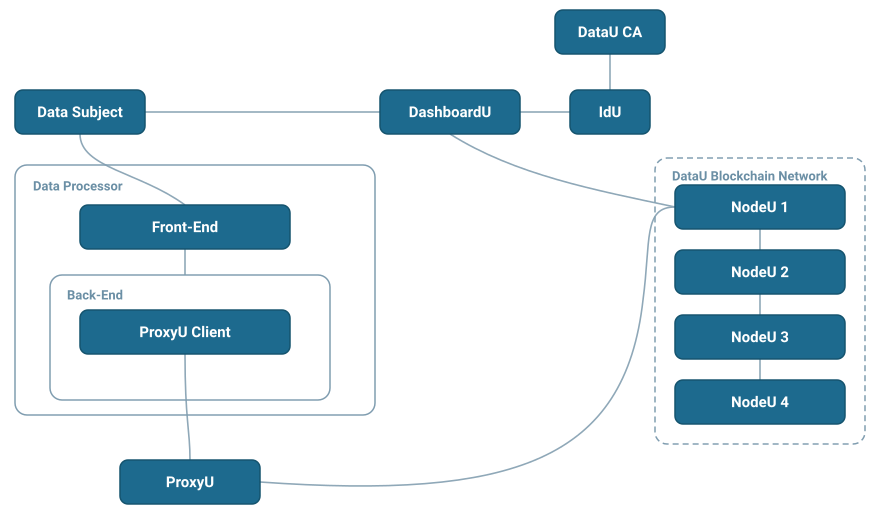

ProxyU Client Guide¶
This section is for Data Processors — developers building applications on top of DataU that need to request and receive personal data from data subjects, with consent and full traceability.
Your application never talks to citizens' data directly. Instead, it integrates with ProxyU, the DataU integration bridge, using the ProxyU Client, to drive two core flows:
- Correlation — link your application to a data subject's DataU identity.
- Permission — request the subject's consent to access specific data, then receive that data through callbacks.

Core concepts¶
- Data subject — the citizen who owns the data and grants (or revokes) consent, using DashboardU.
- Data processor — you: the application requesting and processing data.
- ProxyU — the per-tenant bridge your app connects to (over gRPC + mTLS) to run correlation and permission flows.
- Correlation message — a token your app generates and the subject consumes (via QR code or a DashboardU link) to establish the link between you and them.
- Permission message — a token that encodes a permission request for specific data.
The correlation → permission flow¶
At a high level:
- Your app creates a correlation message and shows it to the subject (QR code or DashboardU link).
- The subject consumes it in DashboardU; your app receives their public key via a callback.
- Your app creates a permission message for a specific data field and shows it to the subject.
- The subject approves in DashboardU; your app receives the granted status and the data via callbacks.
Get started¶
Pick the client that matches your stack.
-
The available client library. Add the SDK as a Maven dependency and wire it into your own JVM application.
-
Under construction — not released yet.
-
Run the Java application as a microservice, or generate your own gRPC client from
proxyu.proto.
Need access?
To integrate you'll need a ProxyU server endpoint and TLS certificates issued by the DataU CA. Contact datau.support@jibecompany.com to get set up.